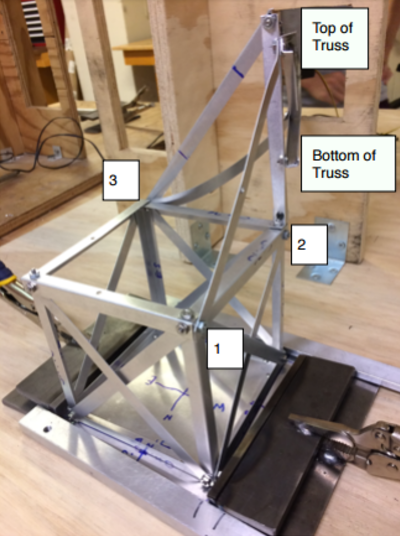
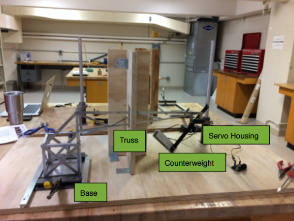
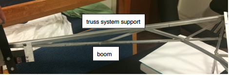
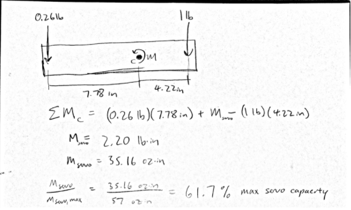
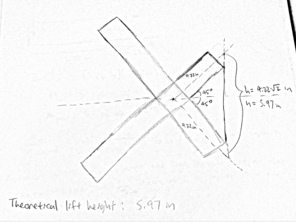

Analysis
Annotation



Truss - In order to resist torsion, the crane boom was bent into a U shaped channel. The truss system was developed to support the beam. All bars were bent to prevent buckling.
Base - The base was built as a 5'' cube. Side edges were made of 0.025'' x 75'' x 5'' strips bent to prevent buckling. Cross bars were placed on each side of the cube to improve resistance to shearing forces. The cube provided rigid locations to mount the truss system 5'' above the ground. The truss system is mounted in three vertices on the top of the cube as labeled above. The cross bar at vertex 1 to the top of the truss counteracts the x-component forces of the truss system. The cross bar at vertex 3 to the top of the truss stabilizes the truss system to be at a specific angle in the x-y plane.
Theoretical Servo Torque Calculation

Assumptions: The counterweight and 1 lb load torques act at the extremities of the 12 inch delrin strip.
Theoretical Lift Distance Calculation

Assumptions: The 1 lb load is in contact with the end of the lever arm through the entire duration of the lift. The plane on which the lever arm rotates is entirely vertical. There is no downward deflection in the boom as the lever arm engages the load.
Discussion
Consistent with our theoretical servo torque calculations, our lever was able to rotate through the full 90 degrees of range without stalling. When it came to lift distance, however, our crane only lifted the 1 lb load by 2.0 inches. We can attribute this to the fact that each of the assumptions made in the theoretical lift distance calculation would have caused us to overestimate our lifting capability. We assumed that the load was in contact with the end of the lever arm through the entire duration of the lift. In reality, the load started off about ⅛” inward. We chose to mount our lifting point here in order to prevent the load from slipping off the lever arm, at the loss of a tiny amount of lift distance. Furthermore, the lever arm’s initial position when angled downward was actually about an inch below the load. Again, we had to trade distance here in order to guarantee that our counterweight would not hit the ground in the final position. Finally, we assumed no deflection when, in reality, the crane boom did deflect a little downward and rotate around its axis due to the bending stress and twisting moments induced when the load was engaged. Downward deflection reduces lift distance pretty directly, and the torsion further reduces lift distance because now only the upward component of the lever arm motion goes to lifting the load.